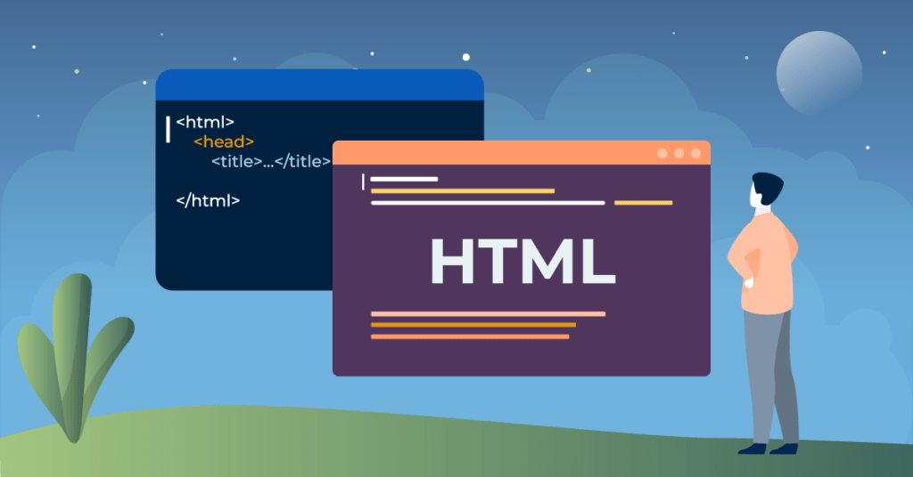

1. HTML
El lenguaje html opera en base a marcadores escritos, a partir de las cuales se cifra la apariencia y orden interno de una página.
2. Python
Python es un lenguaje de programación versátil y fácil de aprender que se utiliza para crear sitios web, software, automatizar tareas y analizar datos.

3. enlaces
para crear enlaces utilizamos la etiqueta <a>
enlace con texto
Pagina de conceptos de python4. Enlace con imagen
5. listas
ejemplo de lista con temas de python
- variables y tipos de datos
- estructuras de control
- funciones
- clases y objetos
6. tabla
ejemplo de tabla
| funcion | decripcion |
|---|---|
abs(x) |
valor absoluto |
pow(x,y) |
x elevado a la potencia de y |
7. Formularios
Los formularios permiten la interacción con el usuario:

8. Imágenes y Multimedia
Se pueden agregar imágenes y videos a las páginas web.